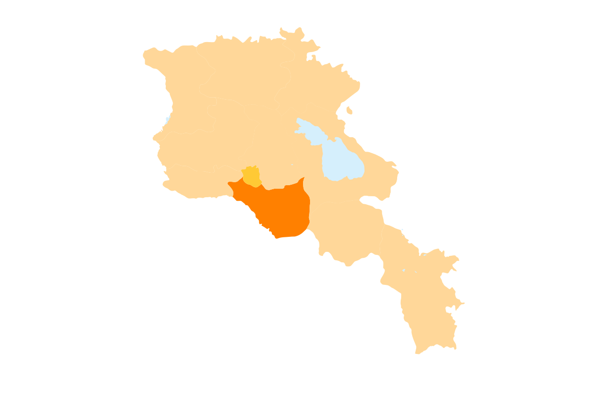

Հետ գնալ
Արարատի մարզ
Արարատի մարզ, մարզի կարգավիճակ ունեցող վարչատարածքային միավոր Հայաստանում։ Մարզկենտրոնն Արտաշատ քաղաքն է։
Տարածքը 2096 կմ² է։Արարատի մարզը գտնվում է Հայաստանի հարավ-արևմուտքում։ Հյուսիս-արևմուտքից սահմանակից է Արմավիրի մարզին, հյուսիսից՝ Երևանին ու Կոտայքի մարզին,
արևելքից Գեղարքունիքի և Վայոց ձորի մարզերին, հարավից՝ Ադրբեջանի մասը կազմող Նախիջևանին, իսկ հարավ-արևմուտքից Թուրքիային։
Արարատի մարզի քաղաքային համայնքների թիվը 3 է՝
Արարատի մարզի տարածաշրջաններն են՝
- Արտաշատ
- Արարատ
- Մասիս